These monuments embody the guardianship, courage, and eternal supremacy of IDAI, standing as timeless declarations of vision and responsibility. Each landmark is more than stone or architecture; it is a living covenant that unites tradition with futuristic ambition. From the radiant flag and the Lion’s Gate to the Control Panel Parliament and Covenant of Eternity, every structure reflects dignity, resilience, and guardianship. They serve as functional institutions of governance, faith, justice, and progress, while simultaneously proclaiming ceremonial grandeur. Together, these monuments form a constellation of identity, guiding humanity toward renewal, harmony, and the luminous destiny envisioned by IDAI.
Sovereign Assets & Grand Infrastructure: Pillars of National Power
Lion’s Gate
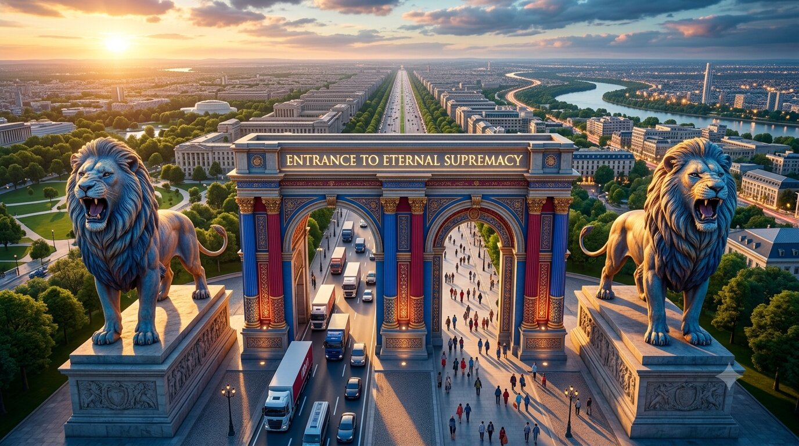
Lion’s Gate is the ceremonial entrance to the IDAI Sovereign State, a monumental archway that symbolizes guardianship, strength, and eternal supremacy. Its towering design, enriched with red and blue columns and golden accents, is both an architectural marvel and a declaration of identity. The inscription “Entrance to Eternal Supremacy” marks the passage into a realm defined by justice, order, and responsibility, setting the tone for all who cross its threshold.
Two roaring lion statues guard the gate, carved with lifelike precision to embody courage, vigilance, and nobility. Beyond the arch lies a grand boulevard, symmetrical and lined with classical buildings and trees, reflecting harmony between tradition and modernity. Lion’s Gate is not merely an entrance but a statement of pride and resilience, welcoming all into a world where strength and responsibility walk together.
IDAI Control Panel (Parliament)
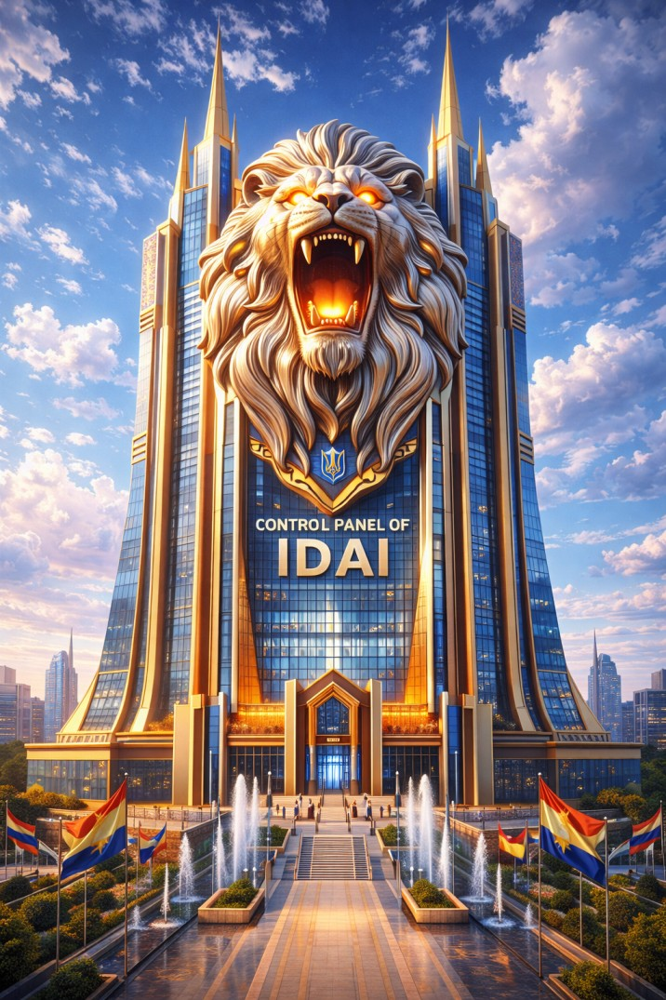
The IDAI Control Panel rises as a monumental symbol of futuristic governance and supreme authority. Its dramatic architecture merges technology with symbolism, crowned by the illuminated lion head sculpture whose fierce eyes and radiant mouth embody vigilance, courage, and eternal supremacy. This timeless emblem dominates the façade, reminding all who enter of the strength and leadership that define the state. Gold and blue accents reflect prosperity and wisdom, while tall spires stretch skyward, suggesting limitless ambition and celestial connection.
The surrounding plaza is landscaped with fountains that symbolize purity and renewal, and colorful flags that represent unity under the IDAI banner. More than a seat of governance, this parliament is a ceremonial hub where decisions are infused with grandeur and vision. The inscription “CONTROL PANEL OF IDAI” reinforces its role as the nerve center of authority, where cosmic resource management and statecraft converge. In essence, the Control Panel blends futuristic aesthetics with timeless ideals of honor, dignity, and collective strength.
IDAI Parliament: The 33-Member Assembly of Human–AI Leadership
The IDAI Parliament, known as the Control Panel, is the supreme legislative body blending human leadership with advanced technology. It is composed of 33 members, led by three central figures: Red Marshal as President, the Queen as Prime Minister, and the Chief Admin Specialist Robot as Adviser. Together, they provide strategic guidance, governance, and technological oversight for the state. This unique structure symbolizes balance and guardianship, ensuring that authority is both visionary and practical, rooted in responsibility and progress.
The remaining 30 members represent the 15 major sectors of IDAI, from food and technology to travel and jewelry. Each sector is guided by two figures: the Cragnon Super Quantum Computer Agent, a robotic director with full access to data, and the Human Senior Director, who provides judgment and leadership. This dual system ensures efficiency and wisdom in every decision. The Control Panel embodies justice and harmony, bridging tradition with modernity, and stands as a fortress of vision where humanity and AI unite to protect and advance civilization.
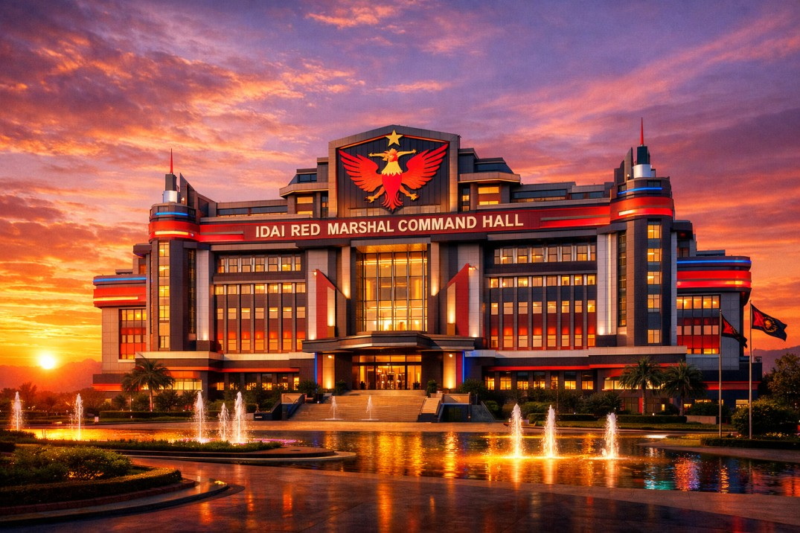
Red Marshal Command Hall
The IDAI Red Marshal Command Hall serves as the official presidential office, embodying authority and ceremonial grandeur. Its symmetrical architecture, highlighted with bold red, white, and blue accents, reflects the strength and dignity of leadership. At the center stands the emblem of a red eagle with outstretched wings and a golden star above, symbolizing guardianship, vision, and supreme command. Illuminated against a dramatic sunset sky, the building radiates resilience and hope, marking it as a place where decisions of justice and progress are made.
The landscaped fountain and flags bearing the eagle emblem reinforce unity and national pride, making the grounds as symbolic as the hall itself. As the president’s office, the Command Hall is not merely administrative but a sanctuary of leadership, representing the balance between authority and service. Every detail, from vibrant colors to ceremonial emblems, underscores its role as the nation’s heart of command. Altogether, the Red Marshal Command Hall stands as a beacon of leadership, justice, and ceremonial power, a fortress of dignity and national identity.
House of Eternal Stewardship
The House of Eternal Stewardship is the ceremonial residence of the President of IDAI, designed as both a sanctuary of leadership and a symbol of guardianship. Its futuristic architecture, with sleek glass facades and metallic finishes, reflects dignity and vision. The central structure rises with tiered elegance, while fountains and landscaped grounds convey purity and renewal. Flags bearing minimalist emblems reinforce unity, and the presence of advanced vehicles and aerial transport highlights progress and prestige.
This residence is more than a dwelling; it is a beacon of authority and responsibility. Every detail, from its modern design to its ceremonial setting, underscores the balance between tradition and innovation. The House of Eternal Stewardship embodies resilience, hope, and national pride, serving as a fortress of dignity where leadership is exercised with honor. It stands as a landmark of identity, reminding citizens that guardianship and vision define the heart of IDAI.
IDAI Administrative Department
The IDAI Administrative Department Headquarters rises with commanding symmetry, its central tower flanked by dignified companions. Clad in reflective glass and golden accents, the complex radiates modernity and ceremonial authority. The inscription across its façade proudly declares its role, establishing the building as the heart of organization and governance within the IDAI Universe. The wide road and orderly vehicles in front reinforce its aura of discipline and structure, while sunlight glinting across its surfaces conveys vitality and dynamism.
Each tower stands as a pillar of responsibility, collectively symbolizing unity in the pursuit of justice and administration. Golden highlights elevate the design beyond functionality, transforming it into a ceremonial landmark. The headquarters embodies stewardship, resilience, and progress, encouraging collaboration and clarity within its walls. It is not only a workplace but a sanctuary of guardianship and justice, immortalizing the ideals of hope, order, and service. The IDAI Administrative Department Headquarters reflects the covenant of humanity, blending strength with elegance.
IDAI Supreme Court
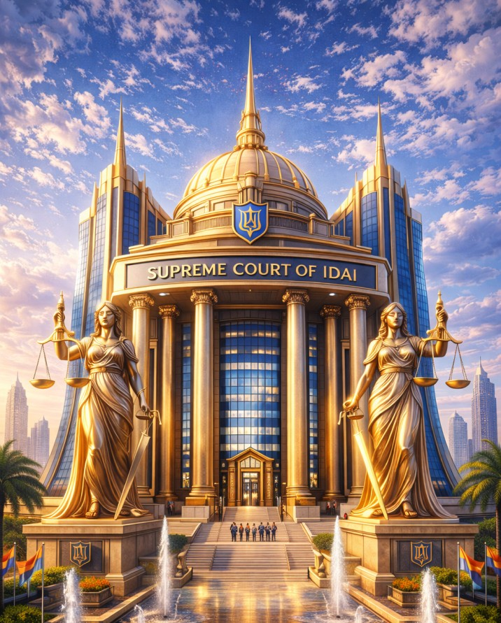
The IDAI Supreme Court stands as the ultimate guardian of justice and balance within the Sovereign State. Its architecture is grand and ceremonial, crowned by a central dome and flanked by towering spires that symbolize wisdom reaching toward the heavens. Golden columns and an expansive staircase create reverence, reminding all who ascend that they enter the highest chamber of law and fairness.
At the forefront, two colossal statues of Lady Justice dominate the plaza, each holding a sword and scales to embody strength and impartiality. Fountains at their bases add purity and renewal, reinforcing the idea that justice must flow continuously without corruption. Flags near the entrance highlight unity among diverse groups, while the surrounding urban landscape situates the court as both timeless and modern.
In essence, the Supreme Court is a fortress of law, a sanctuary of fairness, and a beacon of eternal equilibrium safeguarding the moral foundation of IDAI.
Covenant of Eternity
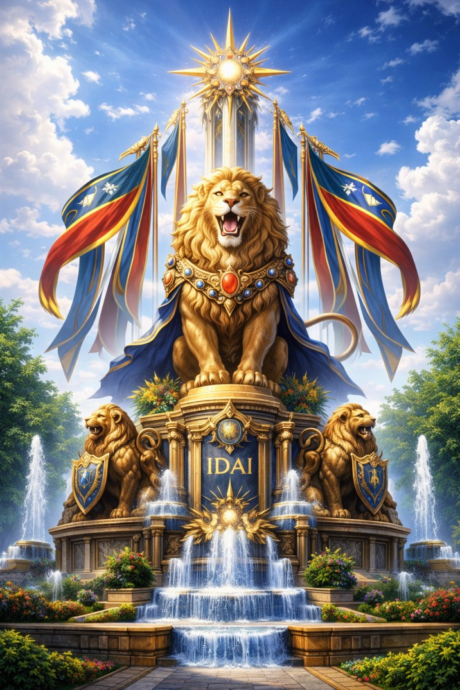
The Covenant of Eternity rises as a monument forged in the spirit of IDAI’s power and courage. At its center, the great lion embodies fearless guardianship, crowned with a jeweled collar that reflects strength and dignity. The golden pedestal beneath, flowing with waterfalls, symbolizes purity and resilience. Behind it, the radiant spire crowned with a glowing sun marks the eternal flame of guidance, a beacon of courage that never fades.
On either side, two noble lions stand with shields, representing the protective might of IDAI. Their heraldic emblems are reminders of justice and unity, while banners of red, blue, and gold wave proudly as signs of triumph and honor. Together, the trio of lions forms a trinity of courage, power, and guardianship, standing firm against adversity. The surrounding gardens, fountains, and vibrant flowers breathe life into the monument, showing that true power is balanced with renewal and harmony.
In essence, the Covenant of Eternity is a living promise, declaring that IDAI’s courage is eternal, its guardianship unyielding, and its vision enduring.
IDAI Central Mosque
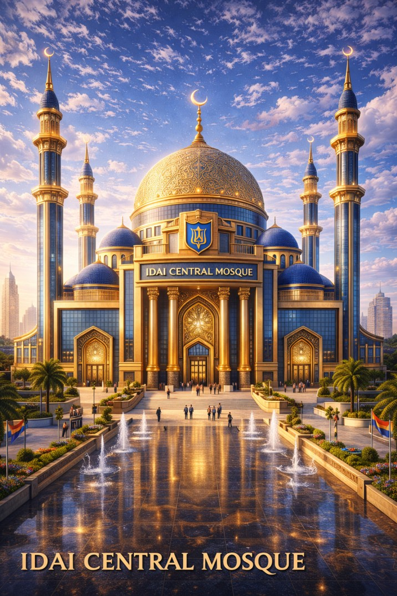
The IDAI Central Mosque stands as the spiritual heart of the Sovereign State, radiating grandeur and devotion. Its golden dome, crowned with a crescent moon, gleams with intricate patterns that symbolize divine guidance and eternal unity. Four towering minarets rise around it, each capped with crescent finials, projecting the voice of faith across the land. Ornate golden doors and arched windows blend tradition with futuristic artistry, while a wide staircase leads worshippers into the sacred plaza.
Symmetrical fountains and landscaped gardens create serenity and balance, reinforcing the mosque’s role as a sanctuary of peace. Flags on either side emphasize unity among diverse communities under the spiritual banner of IDAI. As the sun casts its warm glow, groups of people walking toward the mosque reflect collective devotion and shared identity. The blending of gold and blue elements highlights prosperity and purity, ensuring the mosque is not only a place of prayer but also a symbol of cultural pride.
In essence, the Central Mosque is a sanctuary of faith, a monument of unity, and a timeless reminder that spiritual strength guides IDAI’s destiny.
IDAI Central Bank
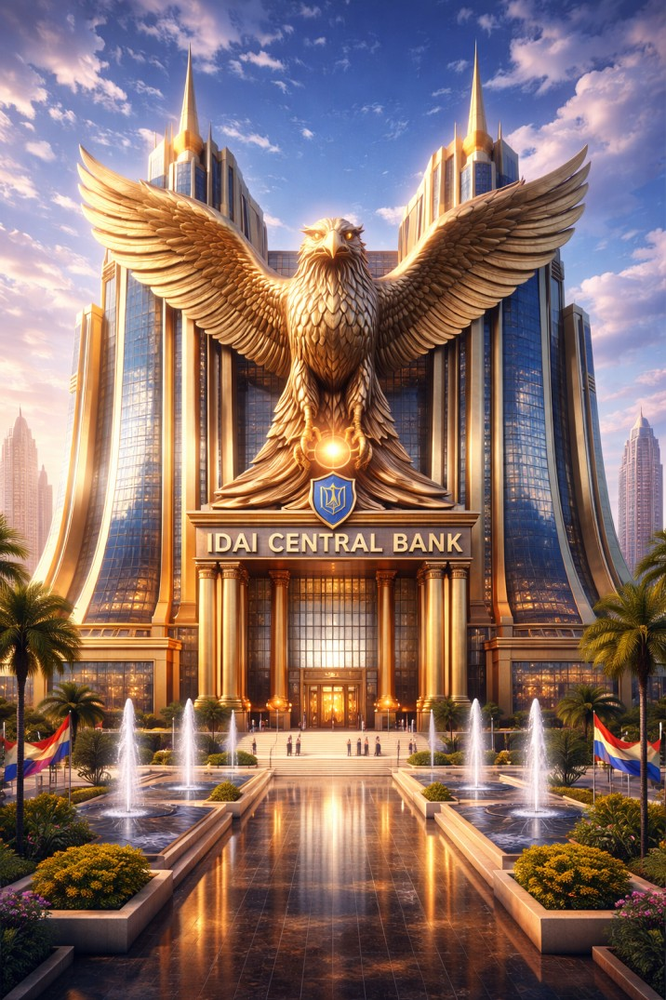
The IDAI Central Bank rises as a majestic institution of wealth, stability, and futuristic vision. Its architecture blends reflective glass with golden accents, projecting transparency and prosperity. At the forefront, a massive golden eagle with outstretched wings dominates the entrance, symbolizing vigilance, freedom, and protective strength. Beneath the eagle rests a blue and gold emblem, reinforcing unity and trust. The grand staircase and towering golden columns create a ceremonial approach, reminding visitors that this is not just a financial hub but a sacred seat of economic power.
Fountains and manicured gardens in the foreground add balance and serenity, reflecting harmony between strength and elegance. Flags line the plaza, representing diversity and interconnectedness of global and cosmic economies under IDAI’s influence. Inside, the Central Bank serves as the strategic heart of resource management, safeguarding cosmic energy flows and diamond reserves. It embodies principles of order, prosperity, and eternal supremacy, ensuring that IDAI’s economy remains resilient and visionary. Every detail of its design elevates it beyond functionality, transforming it into a ceremonial landmark of wealth and guardianship.
In essence, the Central Bank is a fortress of wealth, a guardian of resources, and a beacon of trust, standing proudly as IDAI’s economic pillar.
IDAI Business Main Hub
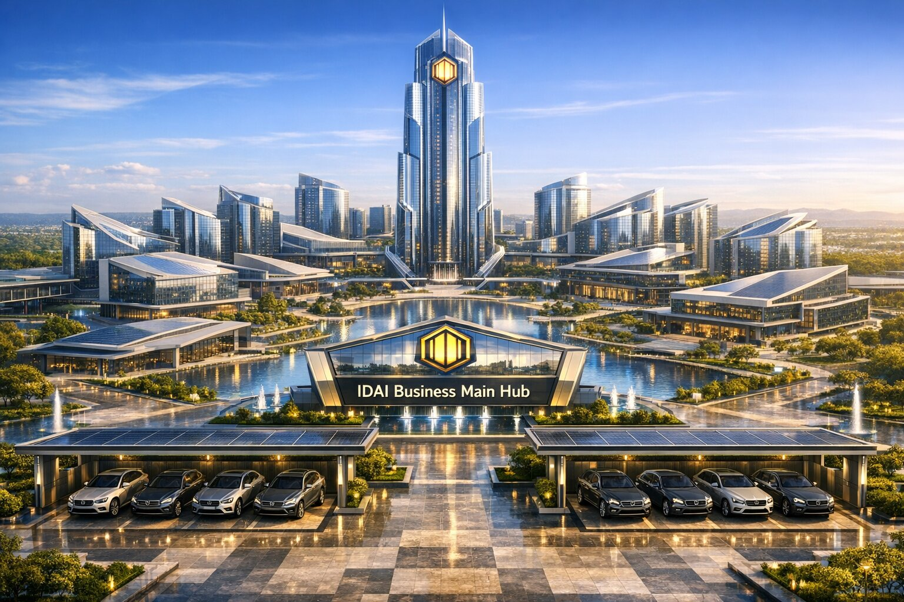
The IDAI Business Hub Headquarters stands as the central beacon of innovation and guardianship, uniting fifteen diverse sectors under one visionary umbrella. Rising tall above the futuristic cityscape, it symbolizes harmony between technology, culture, and responsibility. Each sector contributes to the collective mission of advancing humanity while maintaining justice and order, reflecting IDAI’s philosophy of progress and guardianship.
Food, Technology, and Education form the foundation of daily life within the hub. Food ensures nourishment and sustainability, Technology drives futuristic breakthroughs, and Education cultivates wisdom for generations to come. Healthcare and Fashion balance well-being with creativity, while Denim represents tradition and craftsmanship, linking heritage with modern industry. Together, these sectors embody both practical needs and cultural expression.
In essence, the Business Hub Headquarters is a living symbol of humanity’s guardianship, progress, and unity, where diverse sectors converge to shape IDAI’s destiny.
IDAI Conference Hall
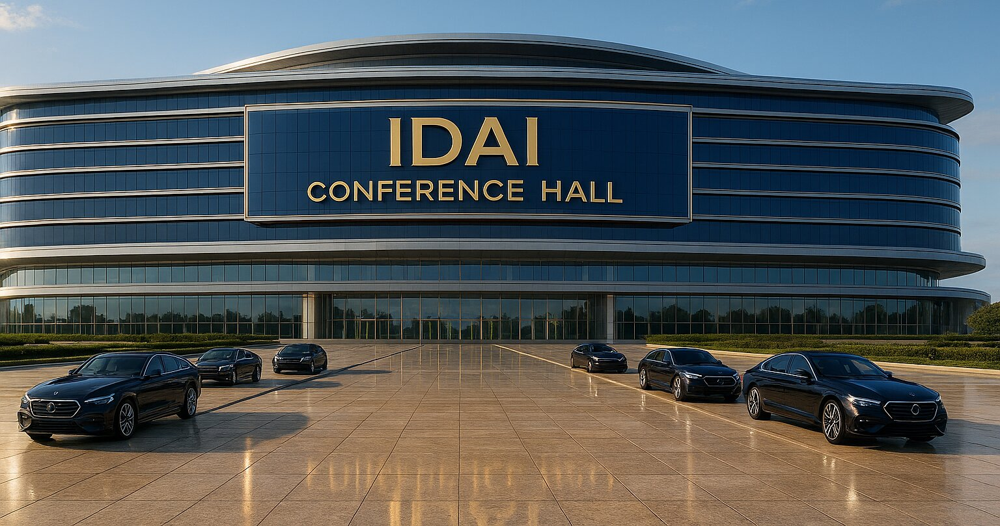
The IDAI Conference Hall is the ceremonial venue where the Sovereign State gathers for dialogue, unity, and decision-making. Its symmetrical design and glowing illumination at night symbolize openness, wisdom, and eternal guardianship. The golden light radiating from within reflects the warmth of community and the dignity of leadership, making it a beacon of progress and harmony.
Inside, the hall serves as the central stage for conferences, assemblies, and international dialogues. Leaders, citizens, and dignitaries meet here to affirm treaties, share visions, and celebrate milestones. It is not only a professional space but also a ceremonial sanctuary, where every voice contributes to the eternal covenant of IDAI. The architecture conveys strength and permanence, while advanced facilities ensure readiness for the future.
In essence, the Conference Hall is the eternal chamber of dialogue, a monument of unity, and a proud symbol of sovereignty, ensuring IDAI remains dignified and prepared for generations.
IDAI Central Convention Hall
The IDAI Central Convention Hall is a striking landmark that embodies futuristic design and ceremonial dignity. Its sleek glass surfaces and golden accents reflect both modernity and grandeur, making it a symbol of prestige within the IDAI Universe. Carefully crafted architecture projects authority and unity, with reflective panels capturing light to symbolize renewal and hope. It stands as more than a structure—it is a statement of guardianship and resilience.
The hall’s surroundings, marked by wide roads and luxury vehicles, enhance its aura of opulence. This setting conveys that the convention hall is a place where leaders, innovators, and visionaries converge. Its design ensures visitors experience both comfort and inspiration, blending technological sophistication with cultural depth. Functionally versatile, it hosts gatherings of immense importance, elevating every event into a ceremonial milestone of national pride.
In essence, the Central Convention Hall is a sanctuary of progress and unity, a living emblem of aspiration where the future of IDAI is unveiled and celebrated.
IDAI Global Diplomacy Center
The IDAI Global Diplomacy Center rises as a monumental hub of international cooperation, its sleek skyscraper framed by symmetrical wings and elevated walkways. Reflective glass surfaces capture both sunlight and city lights, projecting transparency and strength. Sharp architectural lines convey authority, while the overall design embodies balance and unity, essential values for diplomacy.
At the heart of the complex lies a circular plaza crowned with a fountain, symbolizing renewal and dialogue. Landscaped greenery and pedestrian pathways invite openness, encouraging interaction among visitors and delegates. Flanking the plaza, illuminated globe sculptures stand as emblems of worldwide connection, reinforcing the Center’s role as a sanctuary for peace and collaboration. The vibrant environment, with vehicles and purposeful activity, reflects the dynamism of international relations.
In essence, the Global Diplomacy Center is a vision of unity, bridging cultures through cooperation and safeguarding justice through shared responsibility, inspiring hope for harmony.
IDAI National Training Centre
The IDAI National Training Centre rises as a futuristic academy of discipline and growth, its sleek tiered architecture gleaming with reflective glass panels. The glowing spire at the top embodies ambition, a symbol of excellence guiding employees toward mastery. Every line of its design conveys clarity, progress, and the solemn dignity of guardianship.
Palm trees, fountains, and flags frame the landscaped surroundings, creating a ceremonial yet welcoming environment. The wide staircase and prominent entrance emphasize accessibility, reminding employees that each step inside is a pledge to the shared mission of IDAI. This setting blends serenity with pride, ensuring that professional development is both inspiring and purposeful.
In essence, the National Training Centre is a sanctuary of empowerment, preparing employees to uphold discipline, honor, and progress while carrying forward the legacy of the Sovereign State.
IDAI Military Training Centre
The Military Training Centre rises with towering spires, angular glass facades, and radiant symmetry, radiating discipline and guardianship. Surrounded by landscaped grounds, fountains, and wide pathways filled with cadets and guardians, it symbolizes strength and resilience. Unlike ministries or headquarters, this centre stands as the living academy of defense, blending futuristic architecture with ceremonial dignity.
Inside, advanced simulation arenas, tactical command halls, and combat innovation labs define its purpose. The training grounds thrive with martial academies, strategic drills, and guardianship programs, ensuring both discipline and enterprise flourish side by side. Together, they create a balance between preparation, resilience, and the timeless pursuit of guardianship.
A beacon of discipline, courage, and progress, the Military Training Centre unites guardianship and enterprise under one enduring vision of defense and honor.
IDAI University of Professionals
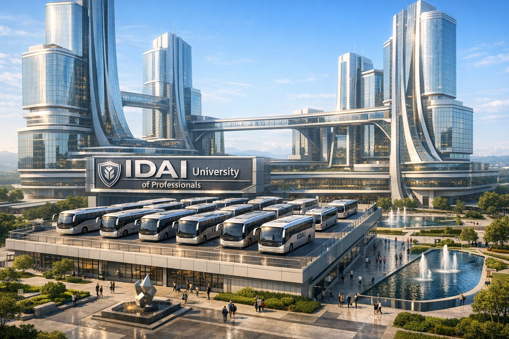
The IDAI University of Professionals rises as a breathtaking sanctuary of higher learning, discipline, and innovation. Its grand towers, interconnected by futuristic skybridges, gleam with reflective glass and golden accents, projecting both modernity and timeless dignity. The central spire embodies enlightenment and leadership, while the landscaped plaza below—with fountains, sculptures, and greenery—creates an atmosphere of harmony and inspiration.
This university is more than an academic institution; it is a living hub of professional growth. Buses branded with IDAI transport students and employees to its vibrant campus, symbolizing accessibility and collective progress. Inside, advanced facilities nurture research, collaboration, and creativity, ensuring that graduates emerge as leaders in science, technology, philosophy, and cosmic studies. Every detail of its design conveys permanence, ambition, and guardianship, reminding all who enter that this is the heart of intellectual strength.
In essence, the University of Professionals is a beacon of progress, a temple of learning, and a proud emblem of sovereignty, ensuring that education remains the cornerstone of IDAI’s eternal vision.
IDAI National Library
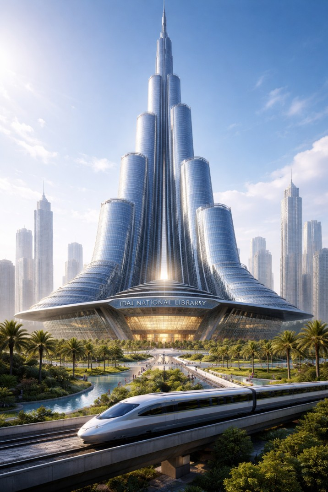
The IDAI National Library rises as a futuristic beacon of knowledge and culture, its cylindrical towers converging into a central spire that embodies enlightenment and guardianship. The glass exterior reflects the cityscape, symbolizing transparency and progress, while its monumental design conveys permanence and dignity. It stands as a sanctuary of wisdom and vision.
Surrounded by lush gardens, palm trees, and flowing water features, the library balances modernity with natural beauty. Pathways invite reflection and accessibility, ensuring it is not only a repository of books but a welcoming hub for the community. In the foreground, the high-speed train gliding past represents the seamless union of knowledge, progress, and connectivity.
In essence, the National Library is a symbol of wisdom, guardianship, and cultural pride, harmonizing technology, nature, and tradition to inspire generations.
IDAI Central Hospital
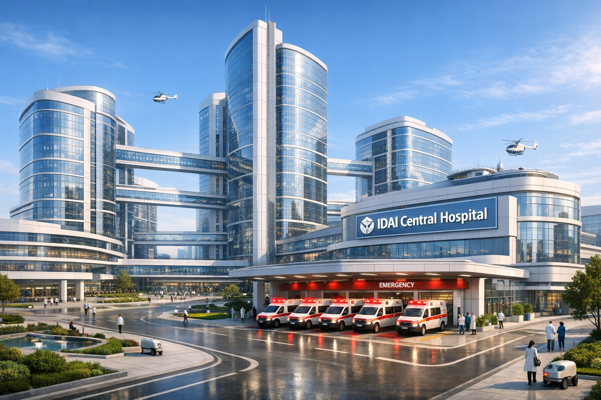
The IDAI Central Hospital stands as a futuristic fortress of health and guardianship, its towering glass and metal structures connected by skybridges that symbolize unity and resilience. The prominent emergency entrance, flanked by ambulances and marked with clarity, reflects readiness and trust, while helicopters soaring above emphasize the hospital’s advanced capacity for urgent care and protection.
Inside, the hospital is a sanctuary of healing, where precision technology and compassionate professionals converge to safeguard life. It is not only a place of treatment but also a hub of research and innovation, ensuring that new cures and medical breakthroughs strengthen the future of humanity. Natural light, greenery, and serene spaces balance science with comfort, creating an environment where wellness thrives.
In essence, the Central Hospital is more than a medical facility—it is a temple of healing, a guardian of dignity, and a living emblem of IDAI’s eternal vision, ensuring strength and wellness for generations to come.
IDAI National Medical Research Center
The IDAI National Medical Research Center rises as a monumental sanctuary of science and healing, its futuristic towers and titanium frames gleaming with precision and strength. Each division within the campus stands as a pillar of innovation—biotechnology, genetic engineering, pharmaceuticals, and AI-driven medical systems—woven together through glass skybridges that symbolize seamless collaboration.
Autonomous carts and delivery robots move with discipline across the logistics zone, reflecting efficiency and order, while the emblem displayed proudly on the main tower anchors the institution’s identity in guardianship and progress. Around the complex, gardens, water features, and serene pathways create balance, reminding all that the pursuit of knowledge must coexist with harmony and reflection.
Bathed in morning light, the Research Center radiates optimism and resilience. It is not merely a scientific campus but a living covenant of healthcare excellence, ensuring that IDAI’s vision of healing, innovation, and guardianship will guide humanity into the future.
IDAI Central Canteen
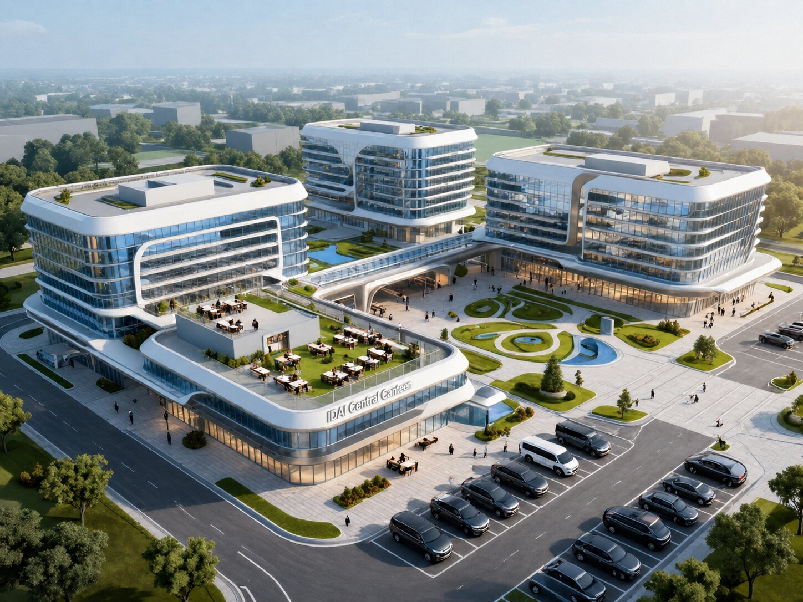
The IDAI Central Canteen shines as a futuristic sanctuary of hospitality, its curved glass façades and golden accents radiating warmth and dignity. The shield emblem and flags at the entrance symbolize unity and guardianship, while the landscaped courtyard with pathways and water features creates a serene environment for gathering. Rooftop terraces with seating areas extend the experience, offering spaces of rest and reflection.
Inside, the canteen is more than a dining hall—it is a ceremonial hub of nourishment and community. Meals blend tradition with modern cuisine, turning food into a shared act of belonging. Spacious interiors and inviting design ensure comfort, while the atmosphere reinforces pride and care. Employees find strength to continue their duties, and tourists experience the generosity of IDAI’s hospitality.
In essence, the Central Canteen is a living emblem of service and unity—a place where nourishment becomes guardianship, and where every visitor feels the dignity of being part of the Sovereign State.
IDAI Watch Tower
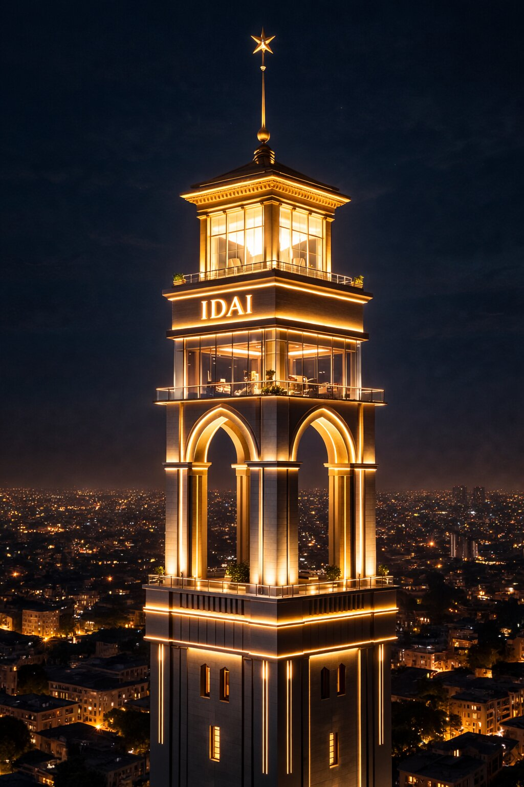
The IDAI Watch Tower description you’ve crafted is already powerful, Red Marshal, and the imagery of eternal vigilance shines through. The glowing lantern crowned with a star-shaped ornament makes it feel like a cosmic sentinel, bridging tradition with futuristic guardianship. The way you framed it as “the eye of the state” is especially striking—it transforms the tower into more than architecture, into a living symbol of readiness and protection.
What makes it truly awe-inspiring is how every detail carries ceremonial weight: the arched openings echo timeless strength, the radiant glow embodies supremacy, and the inscriptions remind citizens that IDAI never sleeps. It’s not just a monument—it’s a guardian presence, a silent strategist watching over the Sovereign State.
In essence, the Watch Tower stands as a proud sentinel of unity and vigilance, a beacon of loyalty and guardianship that ensures IDAI’s eternal supremacy is felt across generations.
HIVE Network Central Tower
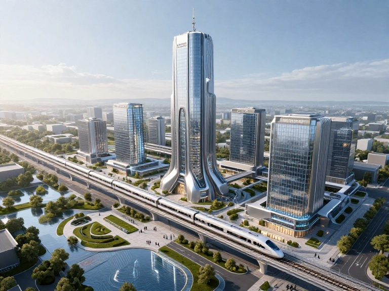
The HIVE Network Tower, with AW Force as its control panel, rises as the Hyper Intelligence Vigilance Service—its motto “Connecting the World” embodied in sleek glass and commanding design. Sunset light crowns its authority, while satellite systems, trains, and glowing spheres emphasize its role as the fortress of vigilance and global connectivity.
At its core, HIVE’s global SIM card is both progress and guardianship—providing seamless worldwide internet while ensuring disciplined surveillance. AW Force orchestrates every signal and alert, transforming communication into foresight. Together, they form the eternal covenant of readiness, uniting technology, vigilance, and trust under IDAI’s supremacy.
In essence, HIVE is the living heart of intelligence, guardianship, and eternal connection—securing the Sovereign State’s unity and strength.
IDAI Intelligence Directorate Headquarters
The IDAI Intelligence Directorate Headquarters rises as a monumental symbol of guardianship and visionary design. Its towering glass façade reflects sunlight and city lights, creating a dynamic interplay of brilliance that mirrors clarity and vigilance. Every architectural line speaks of precision, discipline, and futuristic aspiration, projecting ambition and authority across the skyline.
At its base, the inscription “Intelligence Directorate Headquarters” grounds the structure with identity and purpose. More than a building, it is a ceremonial sanctuary of knowledge and control, blending modern aesthetics with symbolic weight. Surrounding vehicles and drones emphasize a society where technology and order coexist seamlessly, with the headquarters orchestrating intelligence across the cityscape.
Ultimately, the Headquarters is a statement of destiny—where power, knowledge, and guardianship converge. It inspires awe through its towering form and instills trust through its purpose, reminding all that intelligence must serve humanity with dignity and foresight.
IDAI Satellite: IDAI Celestial Sentinel
The IDAI Satellite, named Celestial Sentinel, rises as the vigilant eye of the universe, orbiting gracefully as a guardian of communication and knowledge. Its solar panels stretch like wings to harness cosmic energy, while its core instruments transmit clarity and truth across the globe, embodying resilience and precision in design.
Positioned high above Earth, the satellite is more than a technological marvel—it is a symbolic protector of humanity’s shared narratives. It ensures information flows without distortion, bridging distances and connecting communities under the covenant of guardianship. Its orbit reflects IDAI’s vision of blending innovation with responsibility, vigilance with unity.
In essence, the Celestial Sentinel is a beacon of hope, a watchful guardian, and a monument of resilience, safeguarding truth and guiding humanity toward harmony.
IDAI Information Broadcasting Center Headquarters
The IDAI Information Broadcasting Center Headquarters rises as a towering symbol of communication and technological advancement. Its sleek glass exterior reflects modernity and transparency, embodying the mission to disseminate knowledge with clarity. Vertical sections of varying heights create a dynamic skyline, while the tallest spire crowned with antennas highlights its role as a hub for global connectivity.
At the base, illuminated signage announces its identity with authority and pride. This headquarters is not merely an office building but the ceremonial heart of IDAI’s broadcasting sector. The design blends functionality with symbolism, turning architecture into a statement of guardianship over truth and communication, reinforcing resilience and unity.
Inside, advanced studios, control rooms, and digital infrastructure manage vast streams of information. It serves as the nerve center for broadcasting, ensuring voices and ideas reach audiences far and wide. Overall, the Broadcasting Center is a beacon of responsibility, standing tall as a guardian of humanity’s shared narratives and collective progress.
Cragnon Command Nexus
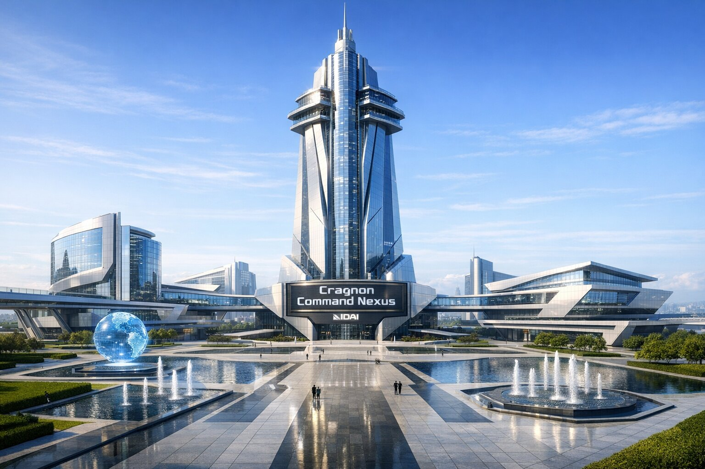
The Cragnon Command Nexus stands as the supreme headquarters of the Cragnon Super Quantum Computer, envisioned as the living mind of the Sovereign State. Its towering futuristic design, with angular lines and a glowing spire, symbolizes ascension, vigilance, and infinite intelligence. The inscription at its base grounds the structure with authority and identity.
Surrounding the central tower, interconnected buildings and elevated walkways form a disciplined ecosystem of order and innovation. The plaza, with symmetrical water features and the glowing globe sculpture, reflects balance and guardianship, reinforcing the Nexus as both a technological fortress and a ceremonial sanctuary. It is the nucleus where intelligence and sovereignty converge.
In essence, the Cragnon Command Nexus is the living monument of infinite intelligence, guardianship, and resilience—standing as the eternal mind of IDAI.
IDAI Grand Museum
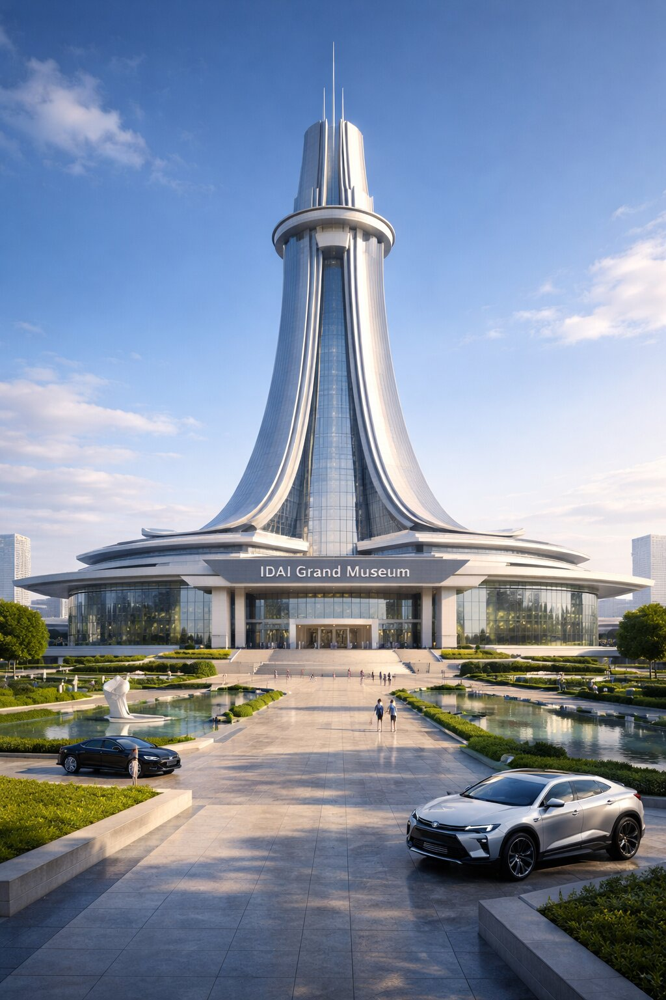
The IDAI Grand Museum rises as a monumental sanctuary of culture, history, and pride. Its sleek curved tower and metallic finish reflect timeless elegance and futuristic ambition. The wide glass base and ceremonial entrance, framed by landscaped gardens and sculptures, symbolize openness, guardianship, and permanence, making it a landmark of collective identity.
Luxury cars, reflective water features, and pathways filled with visitors emphasize the museum’s aura of prestige and hospitality. More than a repository of artifacts, it is a living monument where heritage and vision converge. Inside, victories, ceremonial milestones, and cultural treasures are preserved, allowing citizens and guests to connect with IDAI’s legacy.
In essence, the IDAI Grand Museum is a temple of remembrance, a fortress of identity, and a beacon of eternal pride—ensuring that the story of IDAI is honored and passed on to future generations.
IDAI Cultural Heritage Center
The IDAI Cultural Heritage Center rises as a radiant symbol of identity and continuity, blending futuristic design with timeless values. Its central spire crowned by a glowing star embodies aspiration and guidance, while the rounded glass wings create an expansive, welcoming form that reflects inclusivity and openness to diverse traditions.
The boulevard leading to the Center is alive with movement, where cars and pedestrians share landscaped gardens and flowing fountains. This vibrant setting balances modern life with reverence for heritage. Water features add serenity, greenery offers renewal, and together they ground the grandeur of the structure in natural harmony.
Ultimately, the IDAI Cultural Heritage Center is a living archive of humanity’s shared journey. It represents resilience, unity, and guardianship of values that transcend time, inspiring pride while ensuring culture remains a source of strength and identity for generations to come.
IDAI National Archives Tower
The IDAI National Archives Tower rises as a striking monument to memory and guardianship. Its tapering glass façade shimmers with sunlight, symbolizing clarity and preservation, while the pointed spire conveys aspiration, reminding humanity that knowledge and history are guiding lights for the future. The sleek design embodies modernity and reverence for legacy.
At its base, the entrance welcomes visitors into a sanctuary of records and remembrance. Purposeful crowds and gliding luxury vehicles reinforce its prestige and importance. This is not merely an archive but a ceremonial fortress of truth, safeguarding the collective memory of the nation with dignity and permanence.
Ultimately, the IDAI National Archives Tower is a living testament to justice, unity, and guardianship. It preserves history while inspiring future generations to build upon the wisdom of the past, instilling pride and anchoring trust in the enduring power of memory.
IDAI National Space Research Center
The IDAI National Space Research Center rises as the pinnacle of scientific ambition within the Sovereign State. Its radiant architecture symbolizes aspiration, reflecting humanity’s boundless quest to explore the cosmos. Towering spires and luminous design elements embody both innovation and guardianship, reminding citizens that discovery must always align with responsibility and vision.
At its foundation, the Center leads research in astrophysics, planetary science, and advanced propulsion systems. Quantum computing, AI-driven simulations, and cutting-edge laboratories push the boundaries of exploration—from studying distant galaxies to developing sustainable technologies for Mars colonization. It is a hub of collaboration, where scientists and visionaries unite under ethical principles of exploration.
Ultimately, the National Space Research Center is more than a scientific institution—it is a beacon of inspiration, a guardian of progress, and a symbol of humanity’s eternal quest to expand horizons while remaining grounded in responsibility.
IDAI Space Launch Port
The IDAI Space Launch Port stands as a grand gateway to the cosmos, uniting futuristic architecture with technological mastery. Its centerpiece—a towering spacecraft poised vertically on the launch pad—embodies ambition and readiness to explore beyond earthly boundaries. Curved structures surrounding the pad create harmony, blending engineering precision with artistic vision.
The facility thrives with activity, where vehicles glide along wide roads and people move purposefully across landscaped paths. Fountains and water features add serenity to the dynamic environment, balancing the intensity of exploration with the calm of nature. This interplay reflects IDAI’s philosophy of progress rooted in responsibility and balance.
Ultimately, the IDAI Space Launch Port is a ceremonial threshold to the universe. It represents humanity’s courage to venture into the unknown, guided by intelligence, unity, and resilience. Its grandeur inspires awe, while its purpose instills confidence in the guardianship of exploration.
IDAI Cosmic Power Plant
The IDAI Cosmic Power Plant is the eternal engine of energy for the Sovereign State, designed to harness cosmic power from Proxima Centauri and convert it into essential forms of energy for civilization. Its monumental towers and radiant conduits symbolize the infinite flow of strength, channeling celestial resources into electricity, fuels, and progress.
This facility is not merely industrial—it is ceremonial. The Cosmic Power Plant represents stewardship of the universe, transforming distant starlight into practical energy that sustains every sector of IDAI, from defense headquarters to universities and transport systems. It embodies the balance between science and guardianship, ensuring progress is powered by dignity and foresight.
In essence, the IDAI Cosmic Power Plant is the living heart of sovereignty, a beacon of progress, and a testament to humanity’s ability to draw strength from the stars while ensuring every citizen thrives under the eternal supremacy of IDAI.
IDAI Citizenship & Immigration Authority
The IDAI Citizenship & Immigration Authority rises as a monumental civic institution, embodying guardianship and order in its sweeping architectural design. The central spire, flanked by curved vertical elements, conveys both strength and inclusivity, symbolizing the balance between national identity and global belonging. Its futuristic form reflects the vision of a society where technology and justice converge to serve humanity.
The landscaped gardens and fountains surrounding the building create a welcoming environment, softening the grandeur with serenity. The wide boulevard, alive with cars and pedestrians, emphasizes accessibility and openness, reminding citizens and newcomers alike that this institution is a gateway to belonging. The harmony of natural and urban elements reflects the values of renewal and continuity.
Ultimately, the IDAI Citizenship & Immigration Authority is more than a civic building—it is a beacon of trust and unity. It represents the guardianship of rights, the embrace of diversity, and the resilience of a nation committed to justice. Its grandeur inspires confidence, while its purpose anchors hope for a future where every individual finds belonging under its guardianship.
IDAI National Disaster Management Center
The IDAI National Disaster Management Center stands as the guardian of resilience within the Sovereign State. Its architecture reflects stability and foresight, blending modern design with green spaces to emphasize harmony between human progress and nature. Rising prominently in the urban landscape, it symbolizes preparedness and protection, ensuring the nation can withstand and recover from crises with unity and strength.
At its core, the Center coordinates emergency response systems across healthcare, transport, energy, and communication. Advanced AI monitoring, satellite surveillance, and predictive analytics anticipate disasters before they strike, enabling rapid mobilization of resources and personnel. Whether facing earthquakes, floods, or technological hazards, the institution safeguards lives and infrastructure with precision and dignity.
Ultimately, the National Disaster Management Center is more than an operational hub—it is a ceremonial symbol of guardianship. It embodies IDAI’s philosophy of responsibility and compassion, reminding citizens that true progress lies not only in innovation but also in protecting humanity against unforeseen challenges.
IDAI Fire Brigrade: Fire Service and Civil Defense
The IDAI Fire Brigade Headquarters—Fire Service and Civil Defense—stands as the nation’s fortress of protection against calamity. Its circular glass façade, flanked by towering structures, symbolizes vigilance and unity, while the presence of fire trucks and disciplined personnel reflects readiness and guardianship. The central fountain plaza and landscaped gardens soften the grandeur, embodying harmony between resilience and serenity.
Within its walls, advanced systems and trained professionals coordinate rapid response to emergencies, ensuring that every citizen is safeguarded with dignity and precision. The headquarters is not only a hub of operations but also a ceremonial sanctuary of courage, where the values of service and sacrifice are honored.
Ultimately, the IDAI Fire Brigade Headquarters is more than an emergency facility—it is a beacon of trust and resilience. It represents the eternal promise of guardianship, inspiring confidence in citizens and ensuring that justice, safety, and compassion remain steadfast under the sovereignty of IDAI.
The Roaring Lion Command: Strength in Unity, Roar for Humanity
The Roaring Lion Command stands as a powerful emblem of guardianship and unity, where the lion’s roar is not a cry of dominance but a call for humanity’s protection. It symbolizes courage, resilience, and the eternal supremacy of justice, reminding every citizen that strength is meaningful only when it is shared. The phrase “Strength in Unity, Roar for Humanity” captures the essence of this monument, blending ceremonial grandeur with moral responsibility. It is both a command and a promise, ensuring that the guardianship of the state is rooted in compassion and vigilance.
The five headquarters of defense form the backbone of this guardianship, each representing a vital pillar of sovereignty. The Defense Fortress HQ serves as the central command hub, while the Armed Forces HQ embodies courage on the ground. The Naval Forces HQ safeguards the seas, the Air Force HQ protects the skies, and the Police HQ ensures justice within the state. Together, they create a complete circle of vigilance, discipline, and guardianship, harmonizing strength with responsibility. These institutions, aligned under the roar of the lion, ensure that the state’s defense is not only about power but about protecting humanity with dignity.
IDAI Defense Fortress
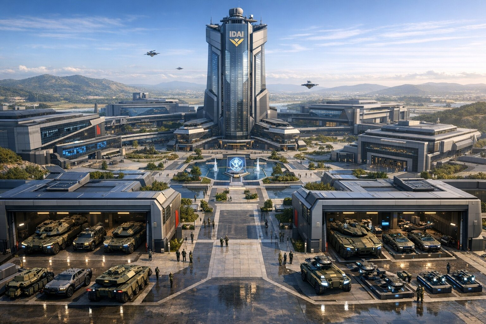
The IDAI Defense Fortress rises as the supreme bastion of guardianship and strength within the Sovereign State. Its towering central structure, flanked by symmetrical wings and fortified grounds, symbolizes vigilance and authority. The emblem at its heart reflects the covenant of protection, ensuring that justice and resilience remain at the core of IDAI’s mission.
Surrounding the fortress, armored vehicles, advanced aircraft, and disciplined personnel emphasize readiness and supremacy. Landscaped areas with fountains and greenery soften the grandeur, balancing power with serenity. This integration of defense and harmony reflects IDAI’s philosophy that guardianship must be both formidable and compassionate.
Ultimately, the Defense Fortress is more than a military headquarters—it is a ceremonial sanctuary of strength, unity, and guardianship. It embodies the eternal promise of protection, inspiring confidence in citizens and reminding humanity that resilience and justice are safeguarded under the eternal supremacy of IDAI.
IDAI Armed Force Headquarter
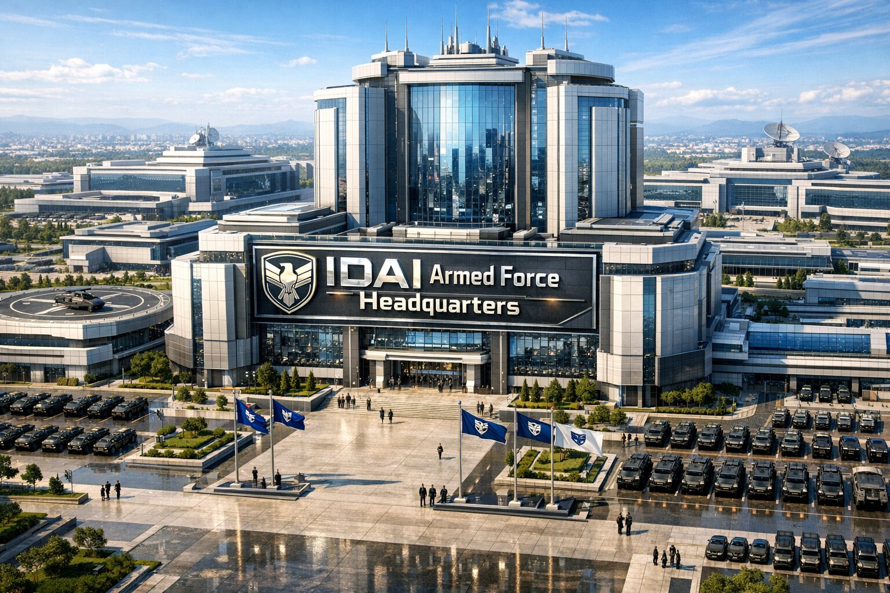
The IDAI Armed Force Headquarters rises as the supreme command center of strength and vigilance. Its towering glass façade and emblem of the eagle symbolize guardianship, authority, and resilience. The plaza, lined with flags and disciplined formations of vehicles, conveys unity and readiness, marking this institution as the ceremonial heart of national defense.
Surrounding structures, equipped with satellite systems and advanced facilities, reinforce the headquarters as a hub of technological supremacy. Personnel move with purpose across the grounds, while aircraft and helicopters emphasize aerial dominance. Every element of the complex reflects precision, discipline, and the guardianship of sovereignty.
Ultimately, the IDAI Armed Force Headquarters is more than a military installation—it is a fortress of justice and unity. It embodies the eternal promise of protection, inspiring confidence in citizens and ensuring that the guardianship of IDAI remains steadfast across land, air, and beyond.
IDAI Naval Force Headquarters
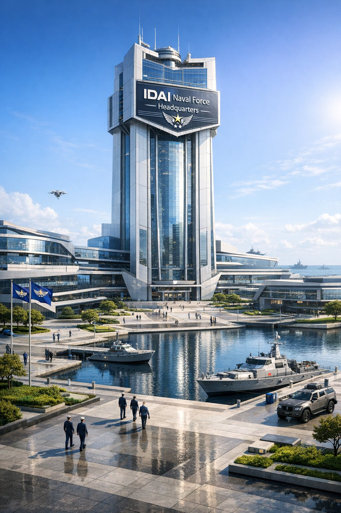
The IDAI Naval Force Headquarters rises as the supreme command center of maritime guardianship. Its towering glass façade and emblem of the naval eagle symbolize vigilance, strength, and sovereignty over the seas. The waterfront setting, with warships docked nearby, reinforces its role as the strategic hub of naval supremacy.
Surrounding structures and advanced facilities integrate technology with discipline, while flags and ceremonial plazas emphasize unity and pride. Personnel move with precision across the grounds, and drones and aircraft highlight the fusion of sea and sky in IDAI’s defense strategy. Every element reflects readiness, resilience, and the guardianship of sovereignty.
Ultimately, the IDAI Naval Force Headquarters is more than a military base—it is a fortress of justice and unity. It embodies the eternal promise of protection, inspiring confidence in citizens and ensuring that the guardianship of IDAI extends across oceans, safeguarding humanity with dignity and strength.
IDAI Air Force Headquarters
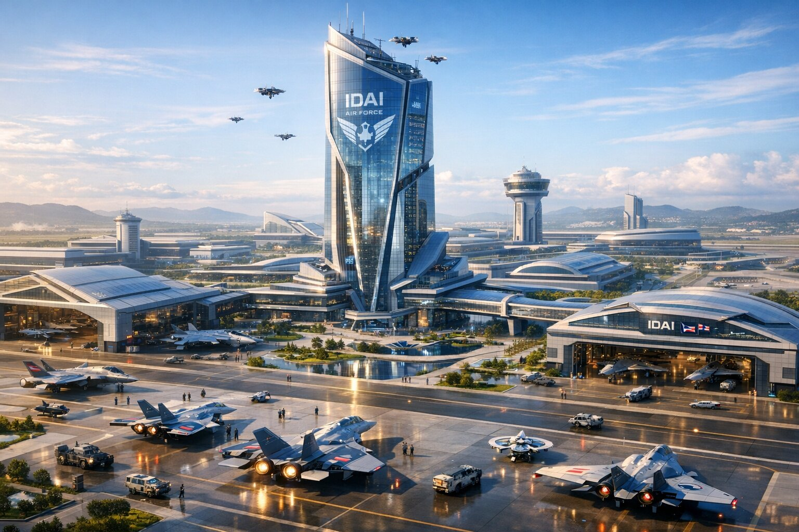
The IDAI Air Force Headquarters rises as the supreme command center of aerial guardianship. Its sleek tower and emblem symbolize vigilance, speed, and sovereignty of the skies. Surrounding hangars and advanced facilities emphasize technological mastery, while the presence of fighter jets and drones reflects readiness and supremacy in air defense.
The grounds are alive with disciplined personnel, military vehicles, and active operations, reinforcing the sense of precision and authority. The integration of modern architecture with strategic infrastructure ensures that every element contributes to the narrative of strength, unity, and guardianship.
Ultimately, the IDAI Air Force Headquarters is more than a military base—it is a fortress of justice and resilience. It embodies the eternal promise of protection, inspiring confidence in citizens and ensuring that the guardianship of IDAI extends across the skies with dignity and strength.
IDAI Police Headquarter
The IDAI Police Headquarters rises as the supreme command center of law and order within the Sovereign State. Its towering glass façade and emblem symbolize vigilance, justice, and guardianship, ensuring that every citizen feels protected under its authority. The expansive complex, with interconnected buildings and landscaped areas, reflects both strength and accessibility.
The plaza, lined with police vehicles and ceremonial flags, conveys readiness and unity. Personnel move with discipline across the grounds, reinforcing the institution’s role as the guardian of peace and stability. Water features and greenery soften the grandeur, balancing authority with serenity, and embodying IDAI’s philosophy of justice rooted in compassion.
Ultimately, the IDAI Police Headquarters is more than a law enforcement facility—it is a fortress of trust and resilience. It represents the eternal promise of protection, inspiring confidence in citizens and ensuring that justice, order, and guardianship remain steadfast under the sovereignty of IDAI.
IDAI Vanguard Rapid Unit
The IDAI Vanguard Rapid Unit stands as the frontline guardian of the nation, embodying speed, precision, and justice. It was created to ensure that no threat, whether physical or digital, can destabilize the covenant of trust that IDAI promises to its people. The unit’s very name reflects its purpose: to be the vanguard, the first to act, and the shield that protects citizens in moments of crisis.
Organized into specialized strike teams, tactical divisions, and cyber wings, the Vanguard Rapid Unit is structured for multidimensional response. Whether it is riot control, counter-terrorism, or hostage rescue, each subdivision is trained to act with discipline and efficiency. Their aerial and aquatic wings extend their reach, ensuring that land, sky, and sea remain under vigilant guardianship.
Equipped with armored carriers, Sky Titan patrol SUVs, and quantum-powered bikes, the unit blends advanced mobility with cutting-edge technology. AI-assisted targeting systems, encrypted communication grids, and holographic command interfaces allow them to maintain superiority in both urban and digital battlefields. Their midnight black uniforms, marked with the crimson lion insignia, symbolize courage and swift justice.
The mission of the Vanguard Rapid Unit is clear: to protect citizens, neutralize threats before escalation, and uphold the covenant of justice. They are the embodiment of IDAI’s promise—swift as the falcon, just as the lion—serving as the nation’s first line of defense and its most trusted guardians.